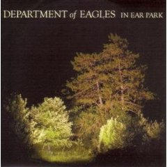

|
It's funny - with the Internet, you can listen to basically any radio station from any city in the world. And yet, I still cling to my home town Current as though it were the best radio station option in the world. Call it local pride or call it no Internet in my car yet, I still find the DJ's at the Current to be some of the most insightful and interesting music sources around. Each year I will typically call my favorite DJ at the time to ask for a suggestion for this list. This year it was Mac Wilson. I have felt a bond with Mac ever since he posted a question on the Current web site asking people to rank their top 5 New Order albums. Mac, in no uncertain terms, told me that my sampler had to include this specific song. I had not heard the song before, but when I did I found that I did not love it, but liked it enough. Not surprisingly, the more I listened to it, the more I like it. Great, now I have another band to learn about. |
 |